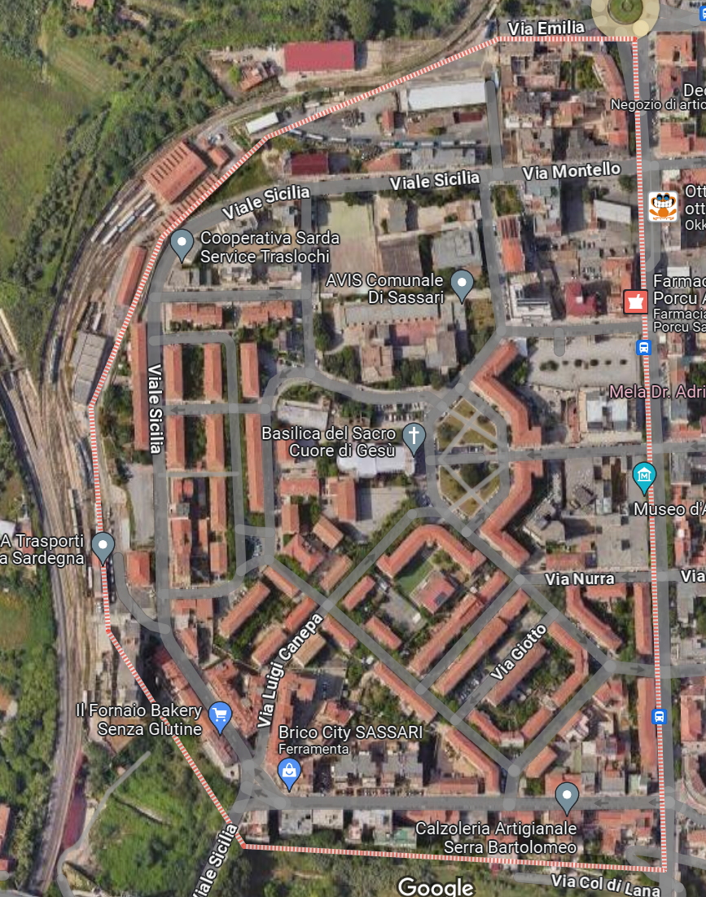

Sacro Cuore di Sassari

Sacro Cuore è un quartiere conosciuto per le sue aree verdi e per la vivace comunità locale. Offre numerosi servizi ed è ben collegato al resto della città, con diverse aree di ritrovo per famiglie e giovani.
Punti di Ritrovo
Parco di Sacro Cuore
Un ampio parco con aree giochi e spazi verdi per rilassarsi. Frequentato da famiglie e bambini.
Piazza Sacro Cuore
Un punto di incontro centrale del quartiere, con panchine e spazi per eventi comunitari.
Centro Sportivo Sacro Cuore
Offre campi sportivi e altre attività per giovani e adulti.
Attività per il Tempo Libero
Organizzate
Gruppo Scout Sacro Cuore
Tel: 0794802940, Sab - Dom
Centro Yoga Sacro Cuore
Tel: 0794361670, Lun - Ven
Associazione Sportiva Sacro Cuore
Tel: 3391937280, Lun - Ven 16:00-19:00
Servizi al Cittadino
Consultorio Familiare
Via Sacro Cuore 15, Tel: 079245130
Parrocchia del Sacro Cuore
Via Sacro Cuore 10, Tel: 079244129
Centro Anziani Sacro Cuore
Via Sacro Cuore 8, Tel: 079246660